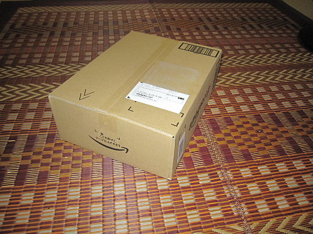
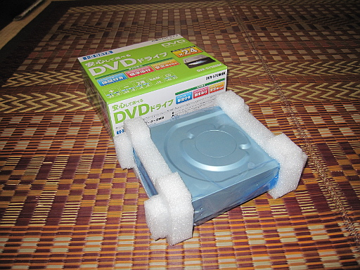
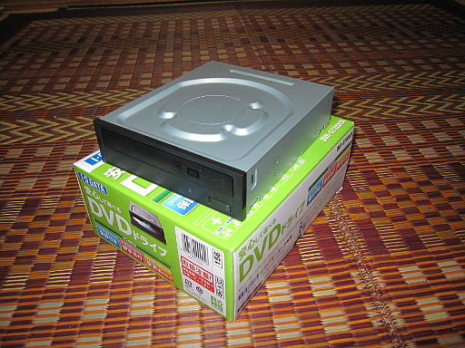
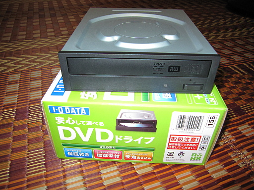

2012 年
10 月 18 日 ( 木 )
なんかきた
なんかきた。

パオーン

開封。

どうよ。

本体価格 2500 円くらい。

SATA！！いやわかってて買ったけど。

ちなみに故障した光学ディスクユニットは IDE 接続だということが昨日判明！！もしかしたらケーブル同梱かも！！と淡い期待をしていたんだけど、もちろんそんなことはなかったよ！！ケーブル買わなくちゃ orz
ネジは 4 つついてました。
- Category :
- 日記
- パソコン